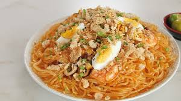

Crispy Pork Sisig
Try the most famous dish of De La Pazella!

Pork Adobo
Try out the most famous dish in the Philippines!

Pork Sinigang
A very delicious soup known for its sourness!

Chicken Tinola
A very special chicken soup known for its Sayote!

Pancit Palabok
A very festive looking type of noodle in the Philippines!

Pancit Bihon
A very unique kind of nooodle dish in the Philippines, and is know for its amazing looks and taste!